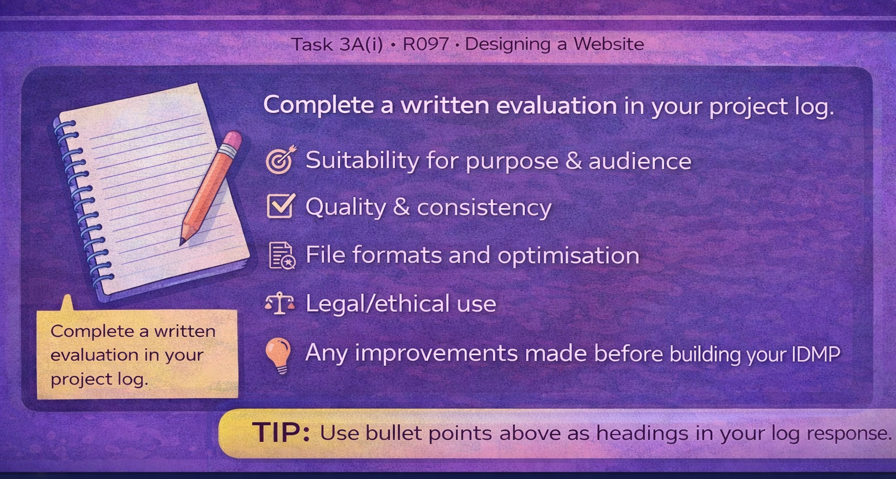

Task 3A(i) Review assets
Review how effective your assets are for the client and audience.
Task 3A(i) – Review the Assets
In this section you must review how effective your assets are before you explain how they could be improved. This is a written evaluation in your project log supported with screenshots of your assets.
What you are doing
You are judging how suitable your images, graphics, logos, buttons, backgrounds and other media are for your website and how well they support the purpose, target audience and client brief.
Evidence to include
- Screenshots of your assets
- Screenshots showing the assets used on your web pages
- References to your asset table and file properties
What to review
Write clear paragraphs explaining how well your assets perform in the following areas:
- Suitability for purpose: Do the assets help the website achieve its goal?
- Suitability for target audience: Are the colours, style and images appropriate?
- Quality: Are the assets clear, sharp and professional looking?
- File properties: Are file types, sizes and formats suitable for web use?
- Consistency: Do the assets follow a consistent theme and style?
- Legal considerations: Are the assets original or correctly sourced and referenced?
Strengths
Explain which assets work particularly well and why they improve the overall quality of the website.
Weaknesses
Identify any assets that are not as effective (for example: poor quality images, inappropriate colours, large file sizes, inconsistent styles, or assets that do not fit the theme).
Reminder: This is a written review in your project log. You are analysing how good your assets are before you suggest improvements.